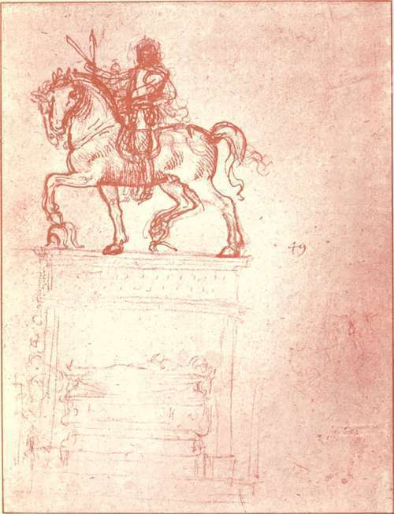
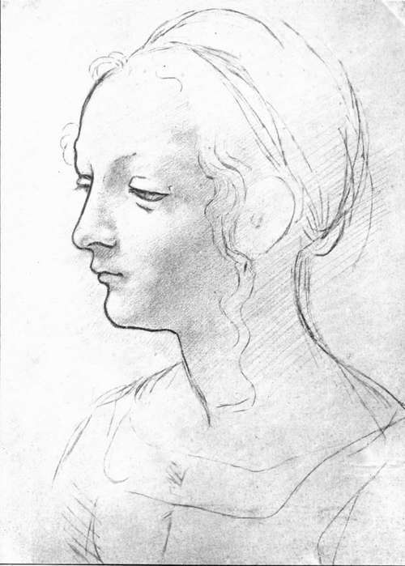

The Records, 1494-1519. Part 6
Description
This section is from the book "Leonardo Da Vinci", by Edward McCurdy. Also available from Amazon: Leonardo Da Vinci.
The Records, 1494-1519. Part 6
It ranks as the third great commission of his artistic life, the one by which alone he seemed to reveal to contemporary Florence the full measure of his genius. " As long as the two existed," says Benvenuto Cellini of Leonardo's and Michelangelo's cartoons, "they were the school of the world."
The issue of the fight according to the narration turned on the possession of a bridge held by the Florentines, captured and recaptured by desperate charges. This is apparently the part of the field he has chosen. In one of the drawings at Venice-2 the bridge is represented in the background to the right. Beside it is the group of four horsemen fighting for a standard, which two have seized and are endeavouring to wrest from a third. The fury of the combat has spread from the men to the horses.
1 r., 601,602.
2 r., pi. liii.
Plate 16. Study For The Trivulzio Monument
New Gallery Portfolio - Royal Library, Windsor
This group figured in the foreground of the composition, and the evidence of the " Anonimo Fiorentino," and the fact that it alone is the subject of such copies as presumably derive their origin from the picture, render it probable that it was the only part of the composition painted in colour on the wall. Dr. Richter has pointed out the only sure ground in the attempt to reconstitute the cartoon from existing drawings. Raphael made a hurried sketch of the Battle of the Standard, now in the University Galleries at Oxford. In this drawing another horse is visible above the group. The attitude exactly recurs in a drawing at Windsor,1 a copy of part of the cartoon made by Cesare da Sesto. In the Windsor drawing a company of horsemen are represented to the right of this figure, advancing with lances raised and streaming pennons. This company presumably formed the right middle background of the original cartoon. Drawings of horsemen and foot-soldiers at Windsor, at the Uffizi, at Venice, and at the British Museum, were probably studies for other parts of the cartoon, but it is not possible to locate the groups.
The dire stress of combat of the central group fighting for the Standard, and the vigour of its execution are best surmised from the drawing by Rubens in coloured chalk in the Louvre, although this can only have been a copy of a copy of the original.
A drawing in pen and bistre, tinted, in the British Museum2 is an early copy of the horse and rider on the right hand of the group. There are also early copies of the group in the Depot of the Uffizi and in the possession of Madame Timbal, at Paris, and Mr. H. P. Home, with which I am not acquainted.
1 R., LVII
2 Malcolm, Add. 1
There are original studies for the heads of three of the group of combatants at Buda-Pesth. On the same sheet are drawings in black chalk of the face furthest from the spectator, and the head of the figure with raised scimitar, seen almost full, with open mouth and face drawn with frenzy. A red chalk study of the head of the horseman on the right, in the same collection,1 equals-nay, even surpasses-it in dramatic intensity.
To these Mr. Berenson and M. Miintz add as a study for the head of a combatant in some other part of the picture the red chalk drawing at Windsor of the head of a young man seen almost full face, starting back with open mouth and eyes staring. I believe this drawing to be a study for the figure of S. James the Greater in the Last Supper, whom Goethe characterizes as "drawing back with terror, gazing with head bent down as one who imagines that he sees before him the horror that he hears." The pose of the head, the open mouth, the eyes staring at something in the near foreground, have on any other hypothesis a very extraordinary similarity in effect. That the position of the body is the same would follow from the faintly indicated line of the tunic in the drawing corresponding exactly to that in the picture. The architectural drawing on the same sheet helps the supposition that the sketch was made at Milan, for to the period of his residence there must be assigned the great majority of his architectural sketches.
Leonardo worked on the cartoon in the Sala del Papa at S. Maria Novella. Records printed by Gaye and Milanesi show the cost of materials and the precise stages of its progress, starting with the decision of the Signoria on the 24th of October, 1503, to give him the key of the room. On the 8th of the following January is a note of the supply of wood in the said chamber, presumably to make a stage " circa picturam fiendam per Leonardum de Vinciopropalatio dictorum dominorum"
1 I. P- 339-
Plate 17. Study Of A Head
New Gallery Portfolio - Royal Library, Windsor
The definite contract was apparently not made until the 4th of May, 1504, when the Council of the Signoria decided that by the following February the cartoon ought to be completed, that they would pay Leonardo 15 gold florins per month, reserving to themselves the power to compel him to restore his salary and abandon the work if it were not completed within the time stipulated, but that if in the meantime he should think fit to paint upon the wall the portion of the cartoon which he had completed, they would pay him a proper salary for so doing and would prolong the specified period within which the cartoon should be completed. But Leonardo for once was punctual. On the 28th of February, 1505, he had completed the cartoon, and a note provides for the erection of the scaffolding in the Sala del Consiglio. The records of regular payments for materials up to the end of October show that he worked for eight months upon the picture. Why the progress of the work was then interrupted is to be inferred from the early biographers. Paolo Giovio and Vasari say that he painted in oil and that the plaster was too coarse to hold the colour. According to the " Anonimo Fiorentino " the plaster was made after a receipt of Pliny's which Leonardo did not properly understand. He tried it on the wall of the Sala del Papa and lit a large charcoal fire, and the heat dried it properly. But when he came to try it on the wall of the Sala del Consiglio, the heat of the fire was only sufficient to dry the plaster of the lower part of the wall; the upper part was too far away to be affected by its action, and consequently did not set.
Continue to:
Tags
leonardo da vinci, pictures, drawings, galleries, statues, da vinci